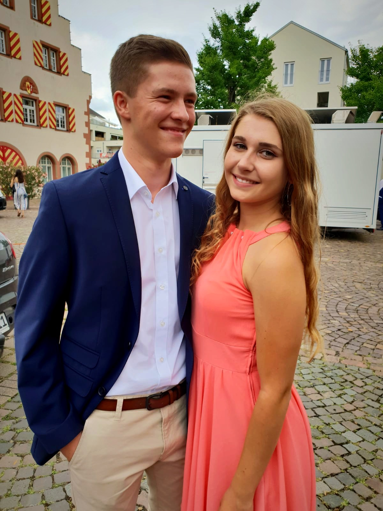
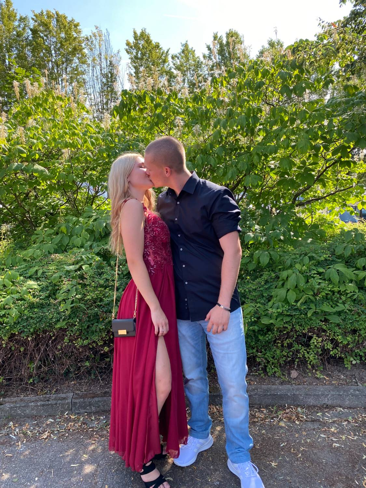
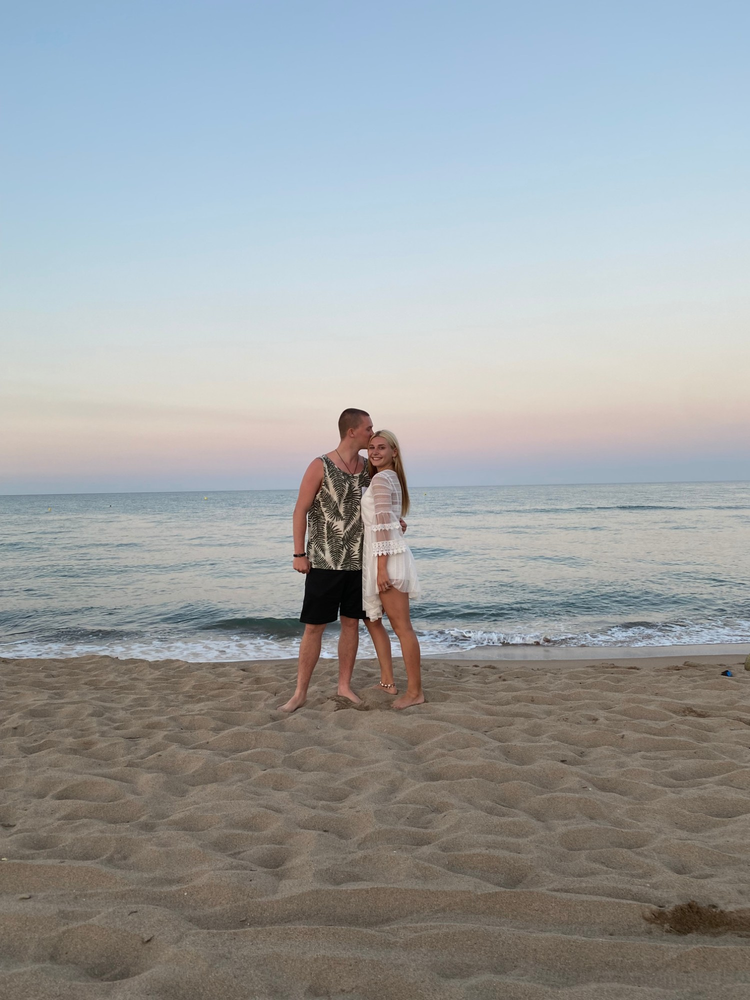
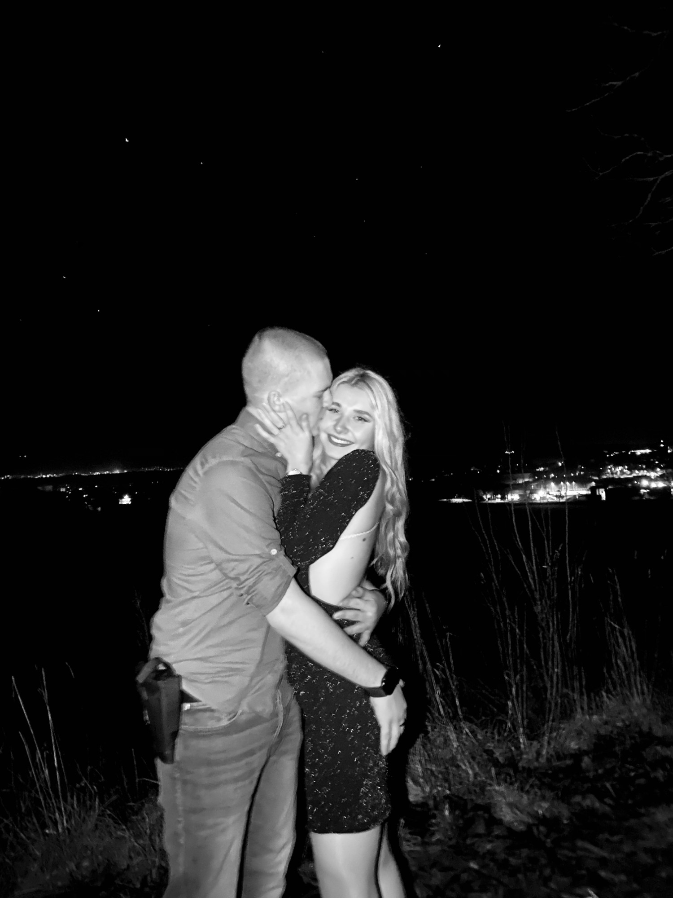
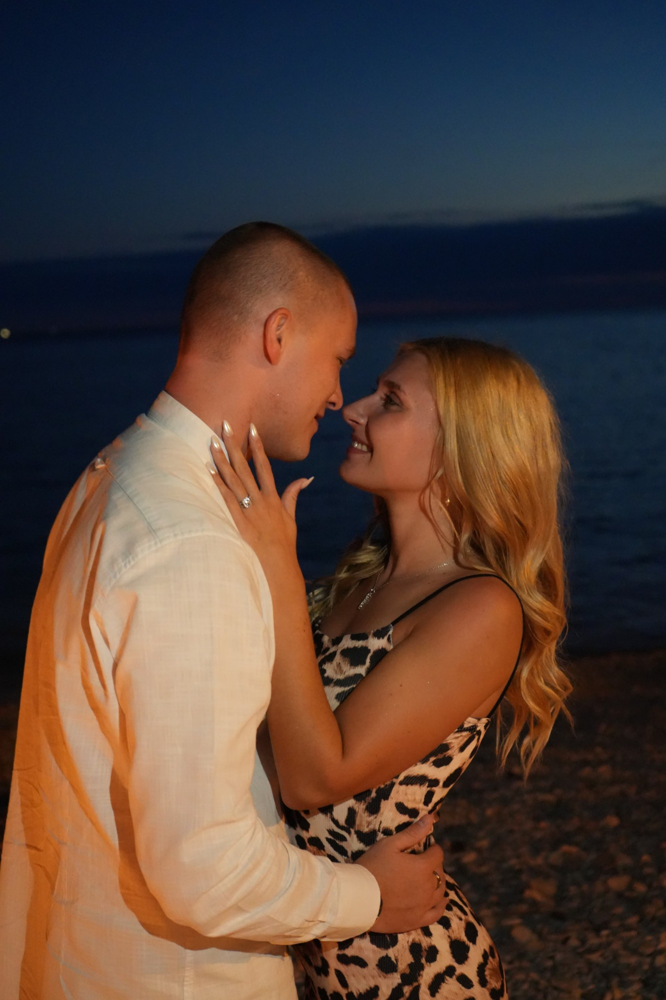
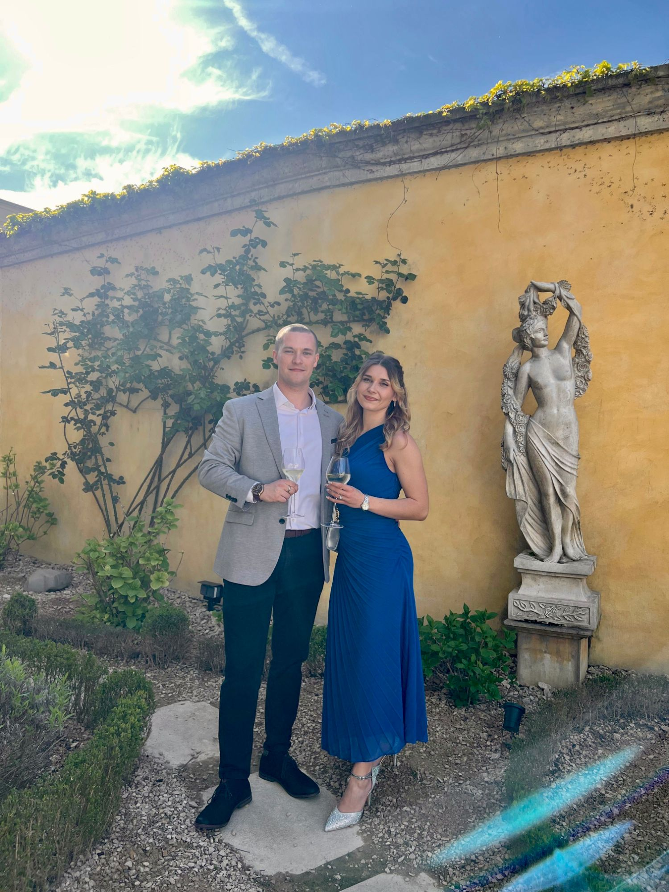

Mit dem Auto
- Emmendingenca. 20 Min.
- Freiburgca. 35 Min.
Parken könnt ihr hinter dem Haus oder auf dem Parkplatz des Getränkehandels nebenan.
Wir heiraten
Samstag26. Juni 2027The White House
Wir freuen uns, euch zu unserer Hochzeit einzuladen, und möchten diesen unvergesslichen Tag mit euch verbringen.
Elegant & schick
Wir freuen uns über eine elegante und schicke Kleidungswahl. Bei den Farben seid ihr vollkommen frei und dürft wählen, worin ihr euch wohlfühlt.
Bitte vermeidet die Farbe Grün.

Unsere Geschichte
Bei unserer ersten Begegnung waren wir 16 und 17 Jahre alt. Wir waren getrennt voneinander mit derselben Freundesgruppe auf dem Weg zur Diskothek in Freiburg.
Unsere erste richtige Unterhaltung hatten wir im Colombipark, und im Hans Bunte tanzten wir zum ersten Mal zusammen. Danach tauschten wir Nummern aus und kamen wenige Wochen später zusammen.
Seitdem sind wir ein Team.
In den vergangenen neun Jahren haben wir Höhen wie Tiefen gemeinsam gemeistert. Jetzt freuen wir uns, mit euch den nächsten Schritt zu gehen und zueinander „Ja“ zu sagen.
Momente




Samstag, 26. Juni 2027
Kommt in Ruhe an und genießt die ersten Minuten mit uns.
Es gibt keine festen Plätze, also setzt euch gern, wo ihr möchtet.
Zeit zum Anstoßen, Gratulieren und Zusammensein.
Wir genießen gemeinsam ein festliches Abendessen.
Wir eröffnen die Tanzfläche zum ersten Mal als Ehepaar.
Ab jetzt gehört die Tanzfläche euch.
Zeit für etwas Süßes und das Anschneiden der Torte.
Wir freuen uns über alle, die mit uns bis zum Schluss feiern.
Location & Anreise

Parken könnt ihr hinter dem Haus oder auf dem Parkplatz des Getränkehandels nebenan.
Vom Bahnhof erreicht ihr die Location bequem zu Fuß.
In Mahlberg und Umgebung gibt es Hotels und Pensionen. Für das Hochzeitswochenende haben wir euch eine Suche vorbereitet.
Unterkünfte ansehenWir sind gespannt, was die Zukunft für uns bereithält.Corinna & Robin
Wir haben lange überlegt, was wir uns wünschen, und festgestellt:
Platz wäre noch in der Urlaubskasse.
Zuhause haben wir bereits alles. Direkt nach der Feier fliegen wir in die Flitterwochen und freuen uns über jeden Beitrag dafür.
Fragen & Antworten
Falls eure Frage nicht dabei ist, meldet euch einfach bei uns.
Kommt gern elegant und schick gekleidet. Wir freuen uns über fröhliche, bunte Farben. Wenn ihr euch in Schwarz am wohlsten fühlt, ist das auch in Ordnung.
Bitte vermeidet Grüntöne.
Ja. Hinter dem Haus gibt es einige Parkplätze. Ansonsten könnt ihr auf dem Parkplatz des Getränkehandels nebenan parken.
Ja, für alle ist etwas dabei. Niemand muss hungrig bleiben.
Während der freien Trauung: Bitte lasst eure Handys in der Tasche. Ein Fotograf begleitet uns in dieser Zeit.
Den restlichen Tag: Wir bitten sogar darum! Je mehr Fotos und Videos aus eurer Perspektive entstehen, desto mehr schöne Erinnerungen bleiben uns. Auf den Tischen findet ihr einen QR-Code, über den ihr alles mit uns teilen könnt.
Wir haben die Location bis 02:00 Uhr gebucht und freuen uns über alle, die mit uns ausgelassen bis zum Ende feiern.
Corinna: Wir haben unsere Gästeliste ganz bewusst zusammengestellt und können leider keine zusätzlichen Begleitungen aufnehmen. Wir hoffen auf euer Verständnis, denn wir möchten den Tag genau mit den Menschen feiern, die uns am Herzen liegen.
Robin: Nicht im Budget.
Ja, eure Kinder sind herzlich willkommen. Bitte passt gut auf sie auf, denn in der Location gibt es einen dekorativen Pool.
Während der freien Trauung und der Tänze bitten wir darum, dass die Kinder nicht stören.
Bitte gebt uns bis zum 01.03.2027 Rückmeldung, ob ihr kommen könnt.